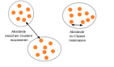
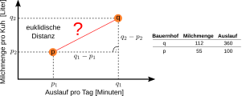
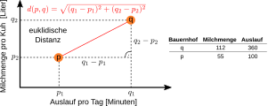
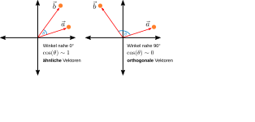
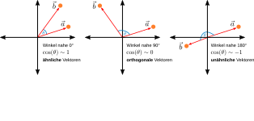
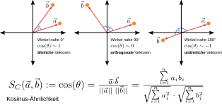
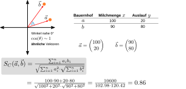

Euklidische Distanz ist ein intuitives Maß für Abstand.
Je größer die Distanz, desto unähnlicher sind sich zwei Datenpunkte.



Wenn Datenpunkte mehr als drei Characteristika haben, ist eine intuitive Visualisierung schwer. Beispiel euklidische Distanz mit 4 Dimensionen:
Die euklidische Distanz zwischen zwei Punkten d(p, q) kann auf beliebig viele (n) Dimensionen generalisiert werden:
Für Beobachtungen mit vielen numerischen Attributen (Zahlen) bietet sich die Kosinus-Ähnlichkeit an. Warum? → siehe "Fluch der Dimensionalität" später in der VL!




Um Attribute mit mehr als zwei Klassen in Wahrheitswerte umzuwandeln, können wir sie one-hot encoden und dann Ähnlichkeitsmaße für Wahrheitswerte verwenden.
| Hof | Rasse |
|---|---|
| a | Holstein |
| b | Braunvieh |
| c | Holstein |
| d | Pinzgauer |
| e | Braunvieh |
One-hot encoding
| Hof | Holstein | Braunvieh | Pinzgauer |
|---|---|---|---|
| a | 1 | 0 | 0 |
| b | 0 | 1 | 0 |
| c | 1 | 0 | 0 |
| d | 0 | 0 | 1 |
| e | 0 | 1 | 0 |
Zahlen
Wahrheitswerte
- Um Clusteranalyse anwenden zu können, müssen wir ein Maß für die Distanz bzw. Ähnlichkeit von Beobachtungen zueinander etablieren.
- Distanzmaße für Zahlen
- Euklidische Distanz
- Kosinus-Ähnlichkeit
- Distanzmaße für binäre Attribute
- Jaccard-Ähnlichkeit
- Jaccard-Distanz